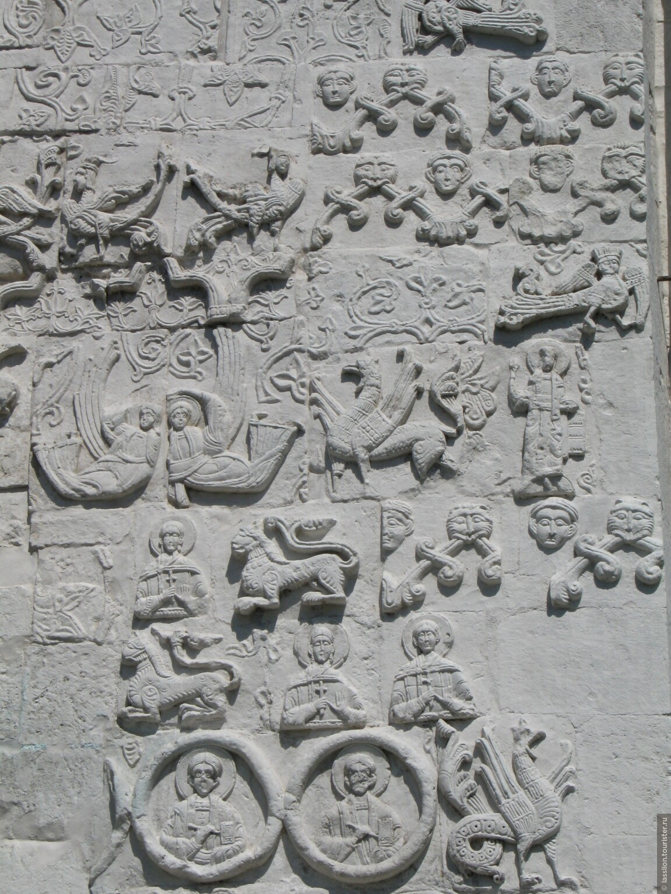

Birds of Paradise. Shallow Relief Carvings. St. Demetrius Cathedral in Vladimir, Russia (1193-97).

The most striking feature of the cathedral are the extensive shallow relief carvings which cover the upper half of the exterior walls above the arcade frieze and the drum below the cupola.